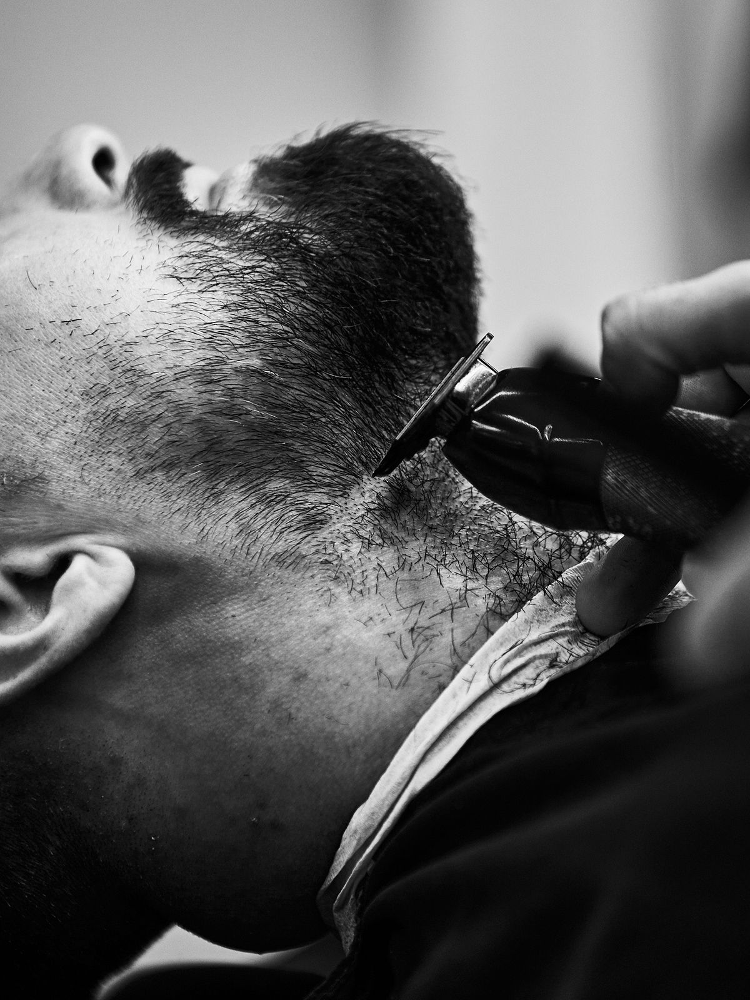
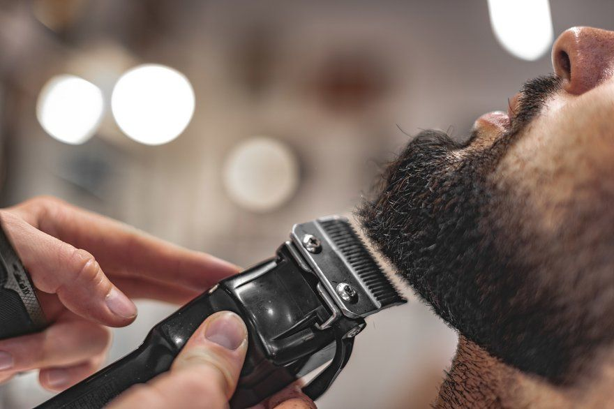

Miért ritka a szakáll – és mit lehet tenni?
A szakáll sűrűségét alapvetően a genetika határozza meg. Befolyásolja még az életkor – fiatalabb korban ritkább, 25–30 éves kor körül sűrűsödhet –, és a hormonszint is szerepet játszik. Ezek olyan tényezők, amelyeken nem lehet változtatni.
Amit azonban lehet: megtalálni azt a szakállstílust és ápolási rutint, amellyel a meglévő szőrzet a legelőnyösebben mutat. Sokan elkövetik azt a hibát, hogy megpróbálják hosszúra növeszteni a ritka szakállt abban a reményben, hogy sűrűbbnek fog látszani. Az ellenkezője igaz – a hosszabb ritka szakáll még ritkábbnak tűnik, mert a hiányos foltok jobban látszanak.

Milyen szakállstílusok működnek ritka szőrzet esetén?
Nem minden szakállstílus egyforma – és ritka szakállnál különösen fontos, hogy olyat válassz, amelyik a tényleges szőrzetsűrűséghez igazodik. Az alábbi stílusok azok, amelyek ténylegesen jól mutatnak.
Borosta (stubble)
Az egyik legjobb megoldás ritka szakállnál. Rövid, egységes hossz – nem emeli ki a hiányos részeket, hanem elfedi őket. Könnyen kezelhető, és szinte minden arcformán jól mutat.
Rövid, rendezett szakáll
Ha a szőrzet elegendő a teljesebb megjelenéshez, a rövidre vágott és precízen kontúrozott szakáll előnyösebb, mint a hosszabb változat. A forma és az éles kontúrvonal az, ami karaktert ad.
Kontúrozott szakáll
A precíz szakálligazítás segít kiemelni a sűrűbb részeket és elrejteni a hiányosabb területeket. Egy jól meghúzott kontúrvonal az arc alján és a pofacsont mentén sokat tesz hozzá az összképhez.
Bajusz kiemelve
Ha a bajusz területe sűrűbb, mint az áll vagy a pofa, a bajusz hangsúlyozása jó megoldás lehet. Egy letisztult bajusz és minimális szakáll kombináció karakteres és rendezett megjelenést ad.

Szakáll ápolási tippek ritka szőrzet esetén
A forma mellé az ápolás is ugyanolyan fontos. Ritka szakállnál különösen, mert az ápolt, egészséges bőr és szőrzet jobban mutat – még akkor is, ha a sűrűség nem ideális.
- Rendszeres szakálligazítás – a forma folyamatos fenntartása az egyetlen módja annak, hogy a szakáll mindig rendezettnek látsszon, ne pedig elhanyagoltnak
- Szakállolaj használata – táplálja a szőrzetet és a bőrt alatta, puhábbá és fényesebbé teszi a szakállt, és segít a viszkető bőr ellen is
- Fésülés – egy kis szakállkefe vagy fésű segít rendbe tenni a szőrzetet és egységesebb megjelenést adni
- Bőrápolás a szakáll alatt – ha a bőr száraz vagy pelyhezik, az látszik a szakállon keresztül is; a hidratált bőr jobb alapot ad
- Szakállbalzsam – hosszabb szakállnál segít formában tartani és puhán tartani a szőrzetet
Miért érdemes barberhez menni ritka szakáll esetén?
A ritka szakáll formázása több figyelmet igényel, mint egy sűrű szakállé. A kontúrvonal pontos meghúzása, a hiányos részek elrejtése és az archoz illő forma megtalálása olyan feladat, ahol a tapasztalat sokat számít.
A Bosphorus barber shopban a szakálligazítás során mindig figyelembe veszik az arcszerkezetet és a szőrzet sűrűségét. A borbély megnézi, hol sűrűbb és hol ritkább a szőrzet, és ennek megfelelően alakítja a formát – nem egy sablont követ, hanem az adott archoz igazítja az eredményt.
- Személyre szabott szakálligazítás – arcforma és szőrzetsűrűség alapján
- Precíz kontúrozás – éles vonalak, rendezett összhatás
- Tanácsadás az otthoni ápoláshoz – szakállolaj, fésülés, karbantartás
- Barber Budapest 7. kerület – könnyen megközelíthető a belvárosból
Formázd meg a szakállad profi kezekkel
Ritka szőrzet esetén különösen fontos, hogy a forma precíz legyen. Foglalj időpontot a Bosphorus barber shopba – a borbély megnézi a helyzetet és megtalálja azt a stílust, amelyik a legelőnyösebb számodra.